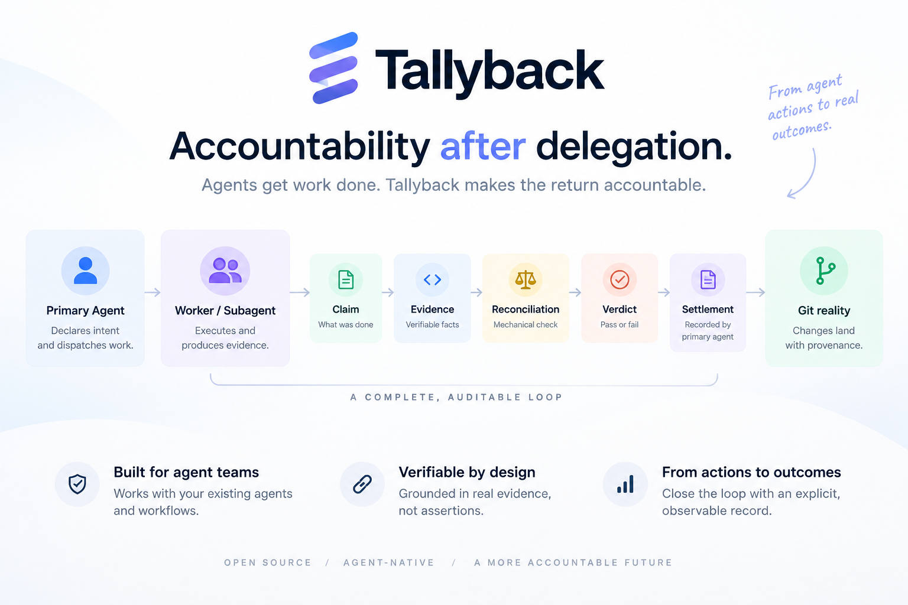

workspace/a
blocked
Accountability after delegation
Subagents and agent teams already know how to send work out. Tallyback gives the coordinating agent a durable, inspectable return path.

Coordination tells the primary agent who is doing what. Tallyback tells it what it actually knows when the work comes back.
Coordination ≠ accountability
Delegation works without Tallyback. Tallyback makes the return accountable.
“Done” is not a fact
“I finished the task.”
completion
What the executor says happened.
implementation complete
Something inspectable that may support the claim.
commit b45b504 · pytest 13 passed
An attributed factual check against repository or Git reality.
git.object.exists · confirmed
A semantic assessment against the declared criteria.
supported · 7 / 7 · confidence high
The explicit decision about what happens next.
accept · retry · abandon · land
Claim is not Evidence. Evidence is not Reconciliation. Reconciliation is not Verdict. Verdict is not Settlement. Settlement is not Git reality.
The responsibility survives
The stable identity in Tallyback is the Task. Agents, sessions, models and worktrees are replaceable executors underneath it.
workspace/a
blocked
feature/todo-mutation
claim + evidence
workspace/final-fix
superseding result
Ledger ≠ reality
tallyback view
View answers what was declared, attempted, claimed, verified and settled. It does not read live Git.
tallyback land
Land reports the new Git reality. It does not merge, rebase, push, or silently promote anything.
The return record
Build the todo mutation path.
TRUST ORDER
Tallyback preserves judgments without pretending the ledger outranks reality.
EXECUTION BOUNDARY
TRY IT
$ git clone https://github.com/FoFxjc/tallyback.git
$ cd tallyback
$ npm ci && npm run build && npm link
$ tallyback --help
$ tallyback handshake